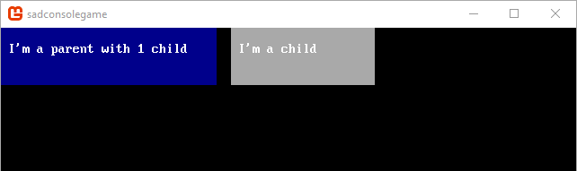
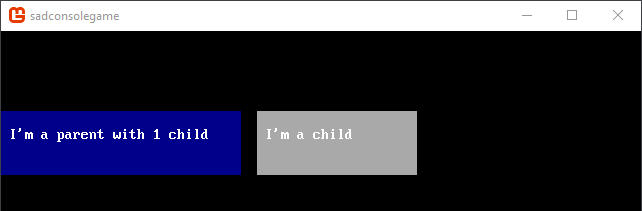
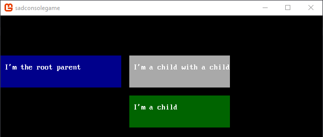
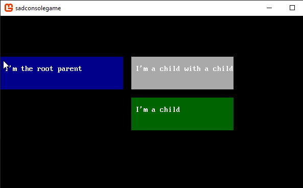
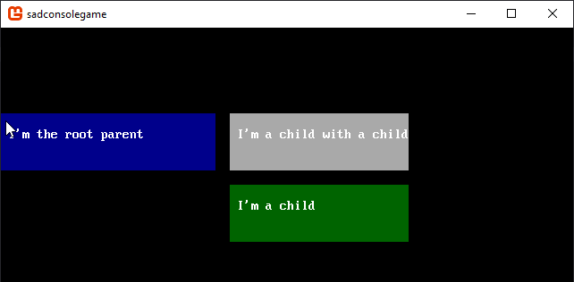

Get Started 3 - Learning about consoles
In this part of the tutorial you'll learn how to use multiple consoles. Consoles can be attached to other consoles. Consoles can even share cell data between them.
Previous articles in this tutorial:
Prep
Reset the Init() method back to a clean state. Whenever the tutorial talks about resetting the Init() method back to a clean state, it means to replace your existing code with the following code:
static void Init()
{
var console = new Console(80, 25);
SadConsole.Global.CurrentScreen = console;
}
CurrentScreen
When the term CurrentScreen is used, it represents the variable SadConsole.Global.CurrentScreen. The CurrentScreen is the object that is drawn on the screen. Any console you create will never be shown unless you get it into the CurrentScreen collection. There are two ways of getting your console to draw, either set your console as the CurrentScreen, or add it as a child of the CurrentScreen.
When you start SadConsole, the CurrentScreen is initialized to an empty console that fits the window. Therefor, you can use that console just like you would any other. Try each variation of the Init method below:
static void Init()
{
SadConsole.Global.CurrentScreen.Print(1, 1, "Hello!");
SadConsole.Global.CurrentScreen.SetGlyph(1, 6, '.');
}
The CurrentScreen can be replaced by any console:
static void Init()
{
SadConsole.Global.CurrentScreen = new SadConsole.Console(10, 10);
}
Parents and Children
Consoles can act as a parent for other consoles. Once a console is parented to another, it appears in the parent's Children collection. When you set the Parent of one console to another or add a console directly to the Children collection of another, the parent-child relationship is established between the two consoles.
static void Init()
{
var consoleParent = new Console(30, 4);
var consoleChild = new Console(25, 4);
consoleParent.Position = new Point(0, 5);
consoleParent.Fill(null, Color.DarkBlue, null);
consoleParent.Print(1, 1, $"I'm the root parent");
consoleChild.Position = new Point(32, 0);
consoleChild.Fill(null, Color.DarkGray, null);
consoleChild.Print(1, 1, "I'm a child with a child");
consoleChild.Parent = consoleParent;
SadConsole.Global.CurrentScreen = consoleParent;
}

Note
You can use the consoleParent.Children collection property directly instead of consoleChild.Parent:
consoleParent.Children.Add(consoleChild);
Offset positions
A console's position is always based on its parent's position. If the console has no parent, then the position is always based on the top-left coordinate (0,0) of the game window.
Using the code from the previous section, change the parent console's position along the Y-axis. The child console will move with the parent along the Y-axis.
consoleParent.Position = new Point(0, 5);

Add another child
Console's can have many children, but they can only have a single parent. The children of a console can also have their own children too. Replace your Init code with the following:
static void Init()
{
var consoleParent = new Console(30, 4);
var consoleChild = new Console(25, 4);
var consoleChild2 = new Console(25, 4);
consoleParent.Position = new Point(0, 5);
consoleParent.Fill(null, Color.DarkBlue, null);
consoleParent.Print(1, 1, $"I'm the root parent");
consoleChild.Position = new Point(32, 0);
consoleChild.Fill(null, Color.DarkGray, null);
consoleChild.Print(1, 1, "I'm a child with a child");
consoleChild.Parent = consoleParent;
consoleChild2.Position = new Point(0, 5);
consoleChild2.Fill(null, Color.DarkGreen, null);
consoleChild2.Print(1, 1, "I'm a child");
consoleChild2.Parent = consoleChild;
SadConsole.Global.CurrentScreen = consoleParent;
}
Here is what the console parent-child relationship looks like:
consoleParent
└───consoleChild
└───consoleChild2
There are some minor differences from the previous code. First, the consoleChild2 variable is created and assigned as a child of consoleChild. Second, the consoleChild2 is set to position 0,5, which is relative to it's parent's calculated position of 32,0. Once the consoleParent is repositioned to 0,5, all children down the chain are also repositioned.

Demonstration
As a way to visualize how parenting works and how it is related to positioning, let's hook the mouse up the root console. Just like in part 2 of this series, we'll create a new mouse component to handle the code for this example.
Add a new class to your project. In Visual Studio in the Solution Explorer pane, right-click the project > Add > Class and name the class MouseMoveComponent.cs and click Add.
Open up the MouseMoveComponent.cs in the editor and add these three
usingstatements to the top of the file:using SadConsole.Components; using SadConsole.Input; using Microsoft.Xna.Framework;Next, inherit from the
MouseConsoleComponentclass. This class is contained in theSadConsole.Componentsnamespace which we just imported.class MouseMoveComponent: MouseConsoleComponentThe
MouseConsoleComponentclass requires that you implement theProcessMousemethod. In this example, the code will do three things:- Check that the mouse is over the game window.
- Move the console this component is attached to, to the same position the mouse is on the screen.
- Flag this component as handling the mouse so nothing else processes the mouse.
public override void ProcessMouse(SadConsole.Console console, MouseConsoleState state, out bool handled) { if (state.Mouse.IsOnScreen) console.Position = state.WorldCellPosition; handled = true; }The
state.WorldCellPositionrepresents what cell the mouse is over according to the game world (0,0 being the top-left of the window).Next, add the component to your console in the
Init()method of the program.cs file, adding it to theconsoleParent.consoleParent.Components.Add(new MouseMoveComponent());
Try running your game now. You'll see the parent console moves to where ever the mouse is and the child consoles follow.

Next, let's change the parent of consoleChild2 to that of the CurrentScreen when the mouse is clicked.
Create another
MouseConsoleComponentin your project. Name the file ChangeParentComponent.cs and make sure the name of the class isChangeParentComponent. Paste in the following code:using SadConsole.Components; using SadConsole.Input; namespace SadConsoleGame { class ChangeParentComponent : MouseConsoleComponent { public override void ProcessMouse(SadConsole.Console console, MouseConsoleState state, out bool handled) { if (state.Mouse.RightClicked) { console.Parent = SadConsole.Global.CurrentScreen; console.Components.Remove(this); } handled = false; } } }This mouse component operates similarly to the one previously created. The differences being that it detects the right mouse being clicked and changes the parent of the console this component is running on. Then, it removes itself from the console.
Next, add the component to your console in the
Init()method of the program.cs file, adding it to theconsoleChild2.consoleChild2.Components.Add(new ChangeParentComponent());
Try running your game now. You'll see the parent console moves to where ever the mouse is while the children follow. When the mouse is right-clicked, the consoleChild2 changes its parent to the CurrentScreen. Even though the console is visually drawn in a new place, the position of the console is still set to (0,5).

After the parent changes, the console parent-child relationship looks like this:
consoleParent
├───consoleChild
└───consoleChild2
Conclusion
Now you understand a bit more about parenting works. The next part of the series will explore creating characters on a console and moving them around with the keyboard.